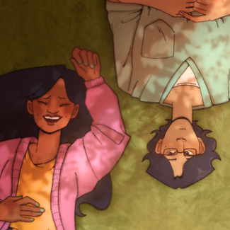
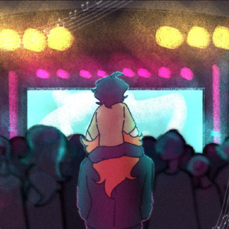
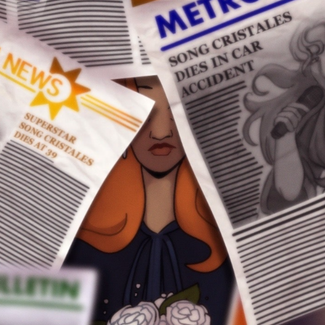
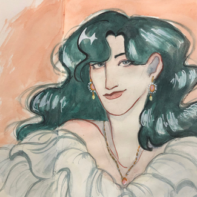
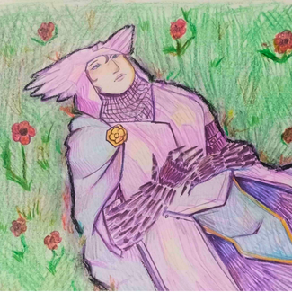
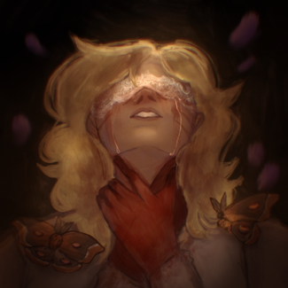

WITH A SMILE
A contemporary story mixed with a bit of fantasy, With a Smile follows the story of the stoic nurse Howard Alonto and his patient, Sicily Adlawan; a passionate musician that wants to leave a legacy as lasting as the stars that grow in her body. It explores themes of family, grief, and how music can change lives, for better or for worse. It is a three-year long writing project with the hopes of turning it into a polished Webtoon. Currently, it has a pilot of the story's FIRST ACT before major changes were made. This can be found on Webtoon Canvas.



OF OWLS AND CROWS
A fantasy story that follows the life of Cordelia. Born with the appearance of like that of a crow, she has spent her life wandering the labyrinth that is her home. But after an unsuspecting thief discovers her, she learns that the outside world may just hold answers about what she is, and who she will become. Of Owls and Crows was my first writing project that started in the 7th grade. Recently, I revisited the idea with goal of bringing what little-me had imagined to life.



MISSING US
Nothing beats an old classic "I got over my ex" song. Inspired by artists: Taylor Swift, Olivia Rodrigo, Conan Gray, and Avril Lavigne, Do You See Me Now is a pop-song written in the perspective of a girl reflecting on a bad relationship with an ex-lover and how she's moving on through music and a person who truly loves her. This was a song-writing project for With A Smile as a song that my character, Sicily will sing.
VERSE
You were an angel of light in my darkest night
Showed me the glitz and glam with you in my life
Changed my body and soul just to hold you tight.
But how was I blind to see
Hid who I was supposed to be
Drownin' in agony
Took that rock off my finger and I'm singin'!
CHORUS
Do you see me now?
Walking in sequins, can you see the sequence
of when our love went, out?
Thought you had me, well baby think again
'Coz I'm living now
Lost the world, gained my love
Thank God, I'm not missing us!